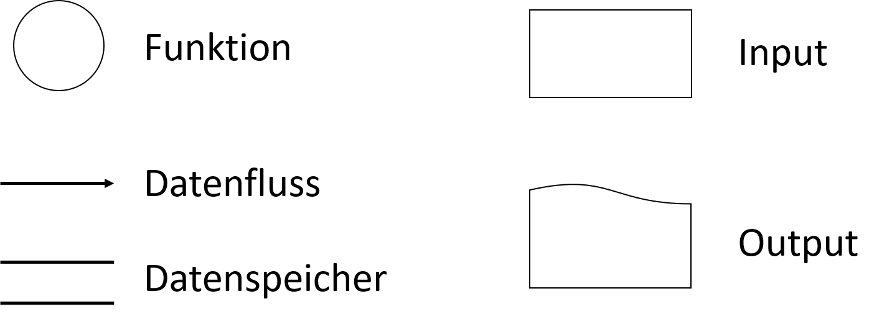

Konstruktive Spezifikationsmethoden
Marcel Lüthi Departement Mathematik und Informatik
Datenflussdiagramme
- Semi-Formale konstruktive Spezifikation
- Systemsicht: Kollektionen von Daten die durch Funktionen "transformiert" werden
- Daten/Informationsfluss im Zentrum
- Daten können persistent sein
- können in Datenspeicher gespeichert sein
Datenflussdiagramme
Datenflussdiagramme
Präzisierung
Präzisierung
Präzisierung
Datenflussdiagramm Beispiel

Datenflussdiagramm Beispiel: Präzisierung
Vor / Nachteile von Datenflussdiagrammen
- Vorteil: Einfach zu lesen
- Nachteil: Keine Formale Definition der Semantik
- Nur Semi-formale Spezifikation
Unklarheit im Datenfluss
- Braucht D Information von A, B und C?
- Gibt D dieselben Daten an E und F?
Unklarheit im Kontrollfluss
- Mögliche Interpretation:
- A und B sind sequentielle Funktionen
- A produziert Datum für B, wartet bis B es konsumiert
- A und B sind autonome Prozesse
- B kann Datum mehrmals lesen
- Pipe Semantik
Use-cases
Textuelle Beschreibung einer Systeminteraktion eines Akteur um fachliches Ziel zu erreichen.
- Was muss gemacht werden um Ziel des Nutzers zu verwirklichen?
- Einnahme von Nutzersicht hilft Anforderungen zu finden
- Use-cases sollen nicht zu komplex sein
- Kaffeepausentest: Anwendungsfall ist zu komplex, wenn Nutzer während Interaktion Kaffeepause braucht
Use-cases: Beispiel
Name: Buch ausleihen
Akteure: Bibliothekar, Kunde
Standardablauf:
Akteure: Bibliothekar, Kunde
Standardablauf:
- Kunde gibt Bibliothekar seine Karte
- Bibliothekar prüft Karte und schaut sich getätige Vorbestellung an
- Bibliothekar holt alle bestellten Bücher
- Bibliothekar vermerkt im System das Bücher vom Kunden ausgeliehen sind.
UML Use-case Diagramme
- Grafische Illustration eines Use-Cases

UML Sequenzdiagramme
- Beschreibt wie Objekte interagieren durch Senden von Nachrichten
- Ergänzt Klassendiagramme um dynamische Sicht

UML Kommunikationsdiagram
- Semantisch Äquivalent zu Sequenzdiagram
- Sequenzdiagram: Fokus auf zeitliche Abfolge
- Kommunikationsdiagram: Fokus auf Struktur

Endliche Automaten (Finite State Machines)
- Eine Menge von Zuständen $Q$
- Eine endliche Menge von inputs $I$
- Transitionsfunktion $\phi : Q \times I \to Q$
- $\phi$ kann partielle Funktion sein

Beispiel: Lampe
UML Zustandsdiagramme
- Vielfältige Modellierungsmöglichkeiten
- Unterstützt verschachtelte Zustände und viele weitere Erweiterungen
Petri-Netze: Spezifikation nebenläufiger nicht-deterministischer Systeme
- Quadruple $(P, T, F, W)$
- $P$: (endliche) Menge von Stellen
- $T$: (endliche) Menge von Transitionen
- $F \subseteq \{P \times T\} \cup \{T \times P \}$: Flussrelation
- $W: F \to \mathbb{N^+}$: Gewichtsfunktion (default 1)
- Anfangsmarkierung $M : P \to \mathbb{N}$
Petri Netz : Grafische Darstellung


Petri Netz: Schaltregel
Eine Transition $t$ ist aktiviert wenn: \[\forall p \in \text{Input Stellen}(t) : M(p) \ge W((p,t)) \]
$t_1$ kann schalten
Petri Netz: Schaltregel
Wenn t schaltet wird eine neue Markierung $M'$ kreiert:\[ \begin{align} & \text{$p \in$ Input Stellen$(t)$}: \; M'(p) = M(p) - W((p,t)) \\ & \text{$p \in$ Output Stellen$(t)$}: \; M'(p) = M(p) + W((t,p)) \\ & \text{$p \in$ Input and Output Stellen$(t)$}: \; M'(p) = M(p) - W((p,t)) + W((t,p)) \\ \end{align} \]

Nach Schalten von $t_1$
Petri Netz: Dynamik
- Jede aktivierte Transition kann schalten
- Modell spezifiziert nicht wann Transition schaltet oder wenn sie schaltet.
Petri Netz: Dynamik
- Mögliche Zustände nach dem Schalten
Petri Netz: Deadlocks
- Hier besteht die Möglichkeit eines Deadlocks. Wie?

Beispiel: Buch Ausleihe

UML Aktivitätsdiagramme
- Modelliert den Ablauf eines Anwendungsfall
- Wie werden Aktivitäten kombiniert
- Erlaubt Modellierung von sequentiellen und parallelen Aktivitäten
- Semantik basierend auf Petri Netzen
UML Aktivitätsdiagramme

Beispiel: UML Aktivitätsdiagramme
Unit Tests
- Weshalb führen Datenflussdiagramme nur zu einer semi-formalen Spezifikation?
- Welche Spezifikationsmethode eignet sich um nebenläfige Prozesse zu modellieren?
- Wozu dient ein Use-case Diagramm?
- Wie können use-cases in der Anforderungsanalyse verwendet werden?
- Was wird mittels einem Aktivitätsdiagramm modelliert?